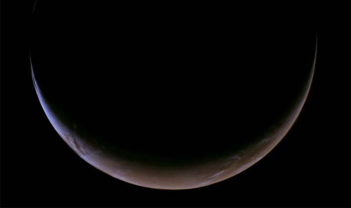
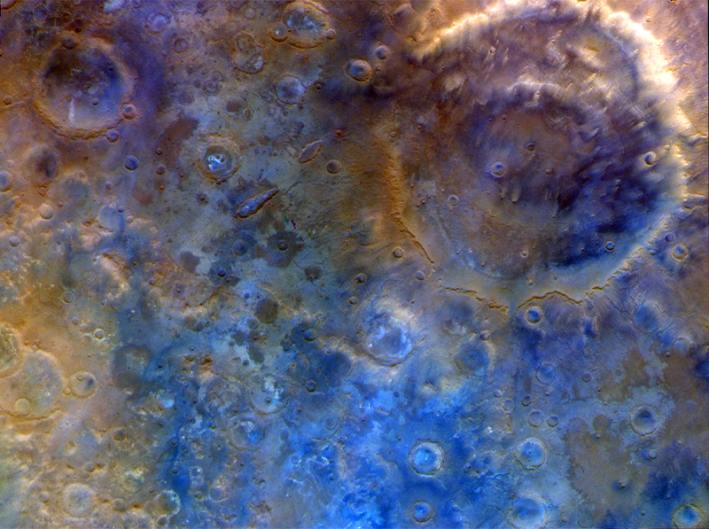
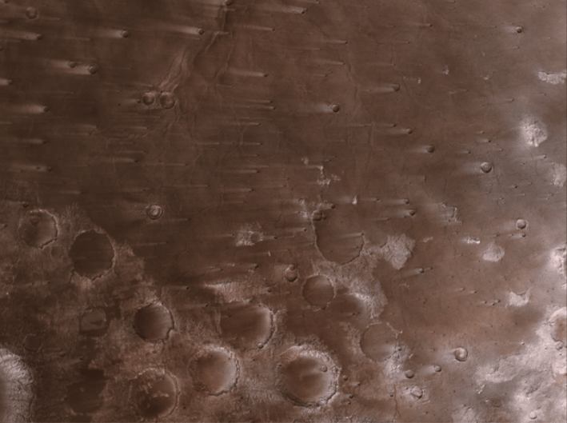
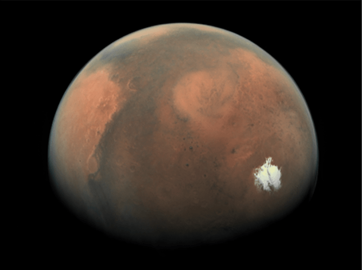

Psyche, a spacecraft launched in 2023 to survey an asteroid of the same name, recently beamed back some amazing pictures of Mars. Of course, sightseeing wasn’t the only reason for this Martian detour. The red planet’s gravity will allow Psyche the spacecraft to accelerate and change its trajectory, putting it on an intercept course with Psyche the asteroid. Additionally, by comparing data collected from Psyche with data from other spacecraft in orbit, engineers back on Earth will be able to calibrate its onboard instruments in preparation for the main mission.
During its flyby, Psyche came within roughly 2,800 miles of the Martian surface (about as close as the Artemis II astronauts were to the moon). Here are a few of the snapshots it took while slingshotting around Mars:

IN THE DISTANCE: Mars as seen by the Psyche spacecraft from 3 million miles away. Credit: NASA/JPL-Caltech/ASU.

CRESCENT MARS: A closer view, showing a thin crescent slice of Mars illuminated by the sun, taken by the Psyche spacecraft’s multispectral imager instrument during its night-side approach to the red planet. Credit: NASA/JPL-Caltech/ASU.
Read more: “How Pebbles Form Planets”

BUMPY SURFACE: An enhanced color view of Huygen’s crater on Mars. Branched channels along the rim of this double crater suggest that liquid water once flowed on the martian surface. Credit: NASA/JPL-Caltech/ASU.

SPACE VOLCANO: An image captured of Syrtis Major, a broad volcanic rise on Mars. The bright streaks—some of them 30 miles long—are the result of the brisk Martian winds whipping across the rims of impact craters. Credit: NASA/JPL-Caltech/ASU.

MARTIAN ICE CAP: A view of the light side of Mars as Psyche completed its flyby. The brilliant white spot is the red planet’s southern polar ice cap, roughly 430 miles across. Credit: NASA/JPL-Caltech/ASU.
With Psyche’s flyby complete, it now begins its three-year voyage to the asteroid 16 Psyche. There, it will orbit for nearly two years, collecting data that will answer questions about how rocky planets formed in our solar system and beyond. 
Enjoying Nautilus? Subscribe to our free newsletter.
Lead image: NASA/JPL-Caltech/ASU